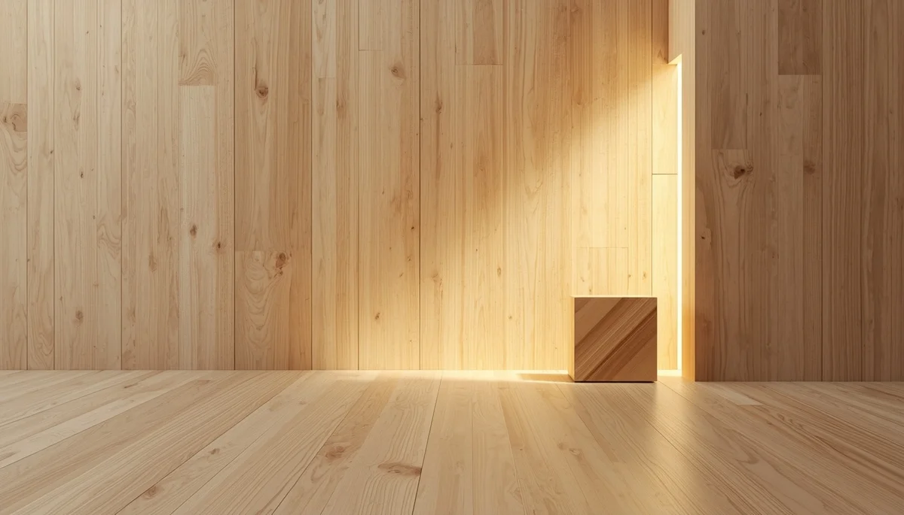

El valor del movimiento libre y espontáneo
El concepto de movimiento libre defiende que el niño, colocado en un entorno seguro y adecuado, es perfectamente capaz de descubrir por sí mismo todas las posturas y desplazamientos sin necesidad de que los adultos le coloquen de pie, le sienten antes de tiempo o utilicen dispositivos como andadores. Esta libertad de acción fomenta una relación armónica con el propio cuerpo, cultivando la autoconfianza y previniendo malas posturas o tensiones musculares innecesarias.
Los riesgos de interferir en las posturas naturales
Cuando sentamos o forzamos la marcha en un bebé cuyos músculos y articulaciones aún no están preparados para sostener ese esfuerzo, generamos una sobrecarga en su columna y alteramos su esquema corporal. Los andadores, por ejemplo, alteran el patrón natural de la marcha, limitan la visión de sus propios pies y aumentan el riesgo de accidentes. Respetar las transiciones posturales garantiza que cada etapa se consolide con total seguridad anatómica.
Construyendo una sólida competencia corporal
El niño que experimenta la libertad de rodar, arrastrarse y gatear aprende a conocer sus límites reales, a gestionar las caídas con mayor destreza y a desarrollar una agilidad que le acompañará durante toda su etapa de crecimiento físico.
"Dejar que el niño conquiste cada postura por iniciativa propia es regalarle la certeza de que su esfuerzo tiene un valor único y transformador."
Confiar en la sabiduría del cuerpo en movimiento
Promover espacios amplios y despejados en casa facilita que la motricidad espontánea florezca sin interferencias, consolidando una base motriz firme, autónoma y profundamente respetuosa.
➔ Volver al índice de Desarrollo psicomotor